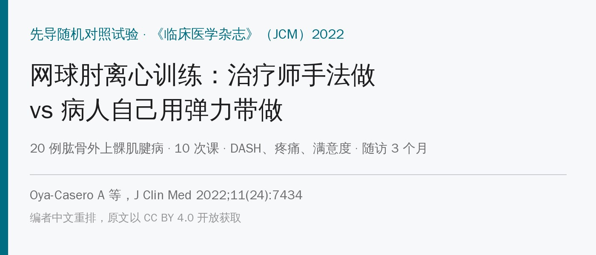
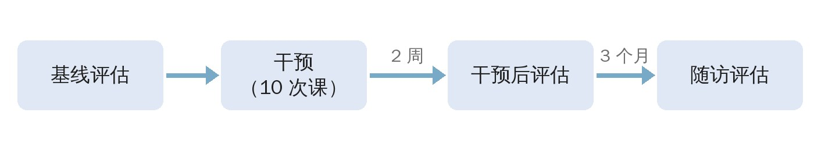
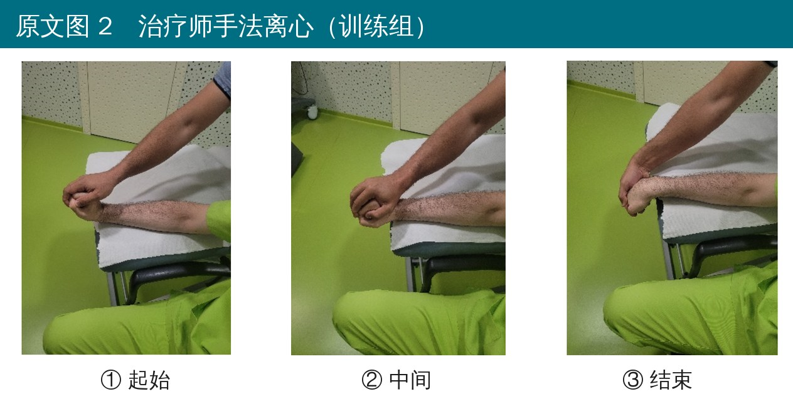
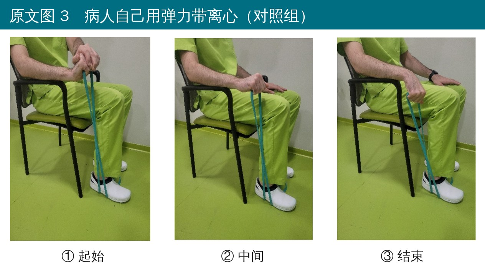
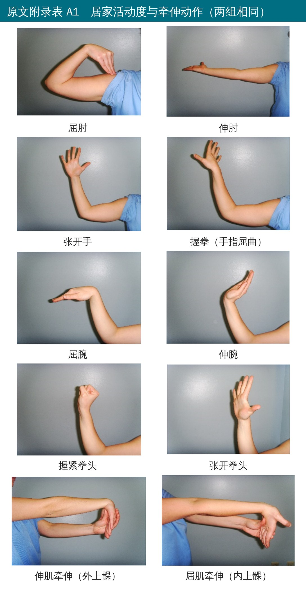
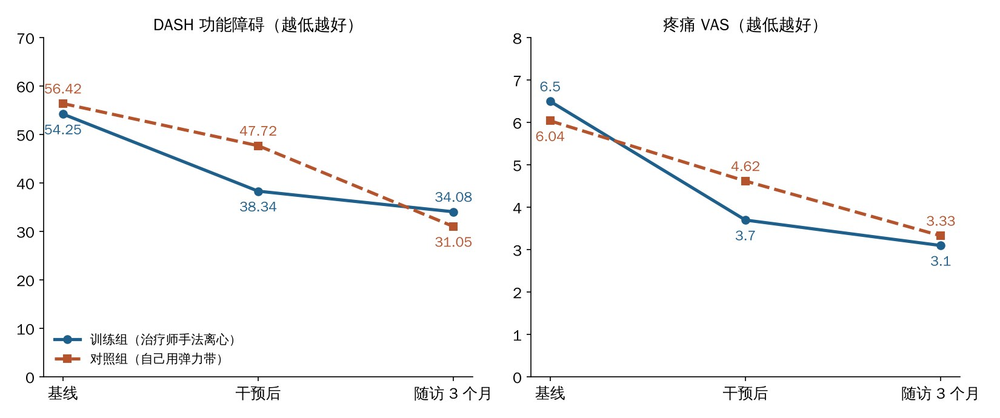
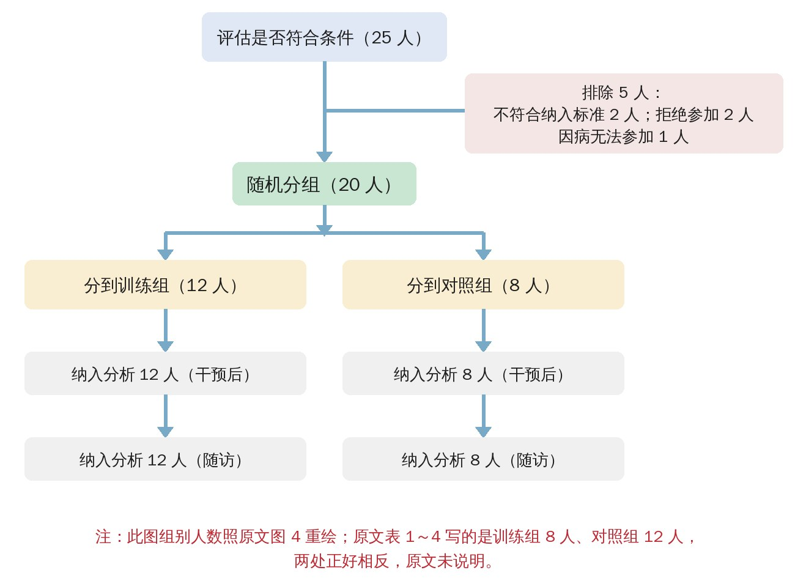

🔖原文信息（编者中文重排）
📚 文献信息
▪ Oya-Casero A, Muñoz-Cruzado Barba M, Madera-García M, García-LLorent R, Andrade-Ortega JA, Cuesta-Vargas AI, Roldán-Jiménez C. Effect of Supervised over Self-Performed Eccentric Exercise on Lateral Elbow Tendinopathy: A Pilot Study. J Clin Med. 2022;11(24):7434.
▪ 作者来自西班牙马拉加大学物理治疗系、哈恩大学医院康复科
▪ 单盲先导随机对照试验，ClinicalTrials.gov 注册号 NCT03996928；DOI：10.3390/jcm11247434
网球肘（肱骨外上髁肌腱病）做离心训练，现在基本是共识。但临床上有个很现实的选择：是让治疗师一次次手把手做，还是教会病人、发张图回家自己练？
前者效果可能更稳，但占治疗师时间、病人要天天跑医院；后者省事省钱，但动作做不做得对、练不练都难说。以前的研究比的都是“离心 vs 向心”“离心 vs 不练”，还没人直接比过这两种做法。这篇西班牙的先导试验就做了这件事：同样 10 次课，一组治疗师用手给阻力做离心，一组自己用弹力带做。
先说结论：两组的功能和疼痛都改善了，组间没有统计学差异。刚练完时治疗师那组改善更多（DASH 降 15.9 分 vs 8.7 分），但 3 个月后反而是自己练那组 DASH 更低。样本只有 20 人，检验效能只有 0.23，只能算“看个趋势”。
• 对象：哈恩大学医院康复科转诊的 20 名网球肘患者，18～65 岁，病程 ≥ 3 个月，平均年龄约 54 岁
• 诊断标准（4 条）：外上髁压痛、抓握痛、伸肘位被动屈腕痛、抗阻伸腕痛
• 排除：全身广泛疼痛、上肢风湿病、颈肩臂痛、上肢外伤史、神经疾病；以及因上肢问题正在休病假或打官司的人
• 分组：训练组由治疗师手法做离心；对照组看图册、自己用弹力带做离心。两组都做同样的活动度和牵伸练习，每次课都给假超声（为了让两组都来医院、提高依从性）
• 评估：DASH（0～100，越高越差）、疼痛 VAS、满意度（5 级），在基线、干预结束后（第 2 周末）和结束后 3 个月测；评估医生不知道分组
• 2017 年 1 月开始招募，2020 年 3 月因新冠疫情提前终止

🔖原文图 1 评估时间线（中文重绘）
两组都是 10 次课：周一到周五每天 1 次，连续 2 周，每次 20 分钟。每次课包括活动度练习 + 牵伸 + 伸腕肌离心，区别只在离心那部分是谁给阻力。

🔖原文图 2 治疗师手法离心
• 起始位：前臂旋前放在治疗床上，屈肘 100°，手伸出床沿，腕在屈伸中立位
• 治疗师先被动把病人的腕和手带到背伸 + 桡偏
• 从这个位置，治疗师在手背施加约 2 kg 的压力，往掌屈 + 尺偏方向压，让病人对抗着慢慢放下去——用 10 秒很慢、很可控地到达终点
• 到终点后，治疗师把手带回起始位，病人不主动用力，避免向心收缩
• 剂量：3 组 × 10 次
这个做法的好处是阻力可以即时调整：治疗师手上能感到病人哪里“掉”了、哪里撑不住，随时减压，而且回程完全被动，真正做到了只练离心。

🔖原文图 3 病人自己用弹力带离心
• 坐在椅子上，前臂旋前搭在大腿上，屈肘 100°，手伸出去，腕在中立位
• 脚踩住弹力带、手握另一头，在弹力带张力下慢慢掌屈 + 尺偏
• 回程时借弹力带的回弹回到背伸 + 桡偏位，尽量不主动发力（避免向心收缩）
• 治疗师先教一遍，再发一本图册回家照着做；每天来医院做假超声时顺便确认有没有练
注意这里有个细节：弹力带回程时其实很难做到“完全不用力”——想让手回到背伸位，多少还是会有伸腕肌参与。如果在家给病人布置离心，可以教他们用另一只手把患手托回起始位，这样更接近“纯离心”。

🔖原文附录表 A1 居家活动度与牵伸动作
• 活动度练习：屈肘、伸肘，张手、握拳，屈腕、伸腕，攥拳、松拳
• 牵伸：伸肌牵伸（伸肘、前臂旋前、另一只手把腕往掌屈方向压，拉外上髁）；屈肌牵伸（伸肘、另一只手把腕往背伸方向扳，拉内上髁）
• 原文没有给活动度和牵伸的具体次数和保持时间

🔖两组 DASH 和疼痛随时间的变化（编者根据原文表 1～3 数值绘图）
| 指标 | 组别 | 基线 | 干预后 | 随访 3 个月 |
|---|---|---|---|---|
| DASH | 训练组（手法） | 54.25 | 38.34（−15.91） | 34.08（再 −4.26） |
| 对照组（弹力带） | 56.42 | 47.72（−8.70） | 31.05（再 −16.66） | |
| 疼痛 VAS | 训练组（手法） | 6.5 | 3.7（−2.88） | 3.1（再 −0.51） |
| 对照组（弹力带） | 6.04 | 4.62（−1.40） | 3.33（再 −1.29） |
• 刚练完：手法组 DASH 多降了约 7 分、疼痛多降了约 1.5 分，但组间差异没有统计学意义
• 3 个月后：弹力带组反超，DASH 31.05 对 34.08；疼痛两组差不多（3.33 对 3.1）。同样没有显著差异
• 满意度：干预后两组都有约 9 成“满意”或“很满意”
怎么理解？一种解释是：治疗师手法组2 周课程结束后就“停”了，而弹力带组已经学会了自己练，回家后可能继续在做，所以后面还在进步。不过原文没记录随访期间谁在继续练，这只是推测。
• 样本太小：只有 20 人（8 对 12），检验效能 0.23，即使真有差异也大概率测不出来；样本量是事后算的
• 组别人数前后矛盾：流程图写训练组 12 人、对照组 8 人，表 1～4 却是训练组 8 人、对照组 12 人
• 两组差的不只是“有没有人监督”：手法组的阻力是治疗师的手（约 2 kg、可调），对照组是弹力带，负荷大小和性质都不同
• 原文说“病人和治疗师都对分组设盲”——一个被治疗师压手、一个自己拉弹力带，病人和治疗师不可能不知道自己在哪组
• 数据本身有疑点：两组平均体重约 76 kg、身高约 1.64 m，算出来 BMI 应该在 28 左右，表 1 却写 23.6 和 23.3，而且训练组 BMI 标准差只有 0.11；身高给的是范围不是标准差
• 随访满意度表很奇怪：手法组 3 个月时 87.5% 变成“有点不满意”，但疼痛和功能并没有变差，可能是录入错位
• 讨论里随访的数字和表 3 对不上（如对照组写“再降 7.97、0.13”，表 3 是 16.66、1.29）；VAS 说是 100 mm 但数值按 0～10 报告
• 没有握力等客观指标；各组内前后比较没报告 P 值；试验 2017 年开始、2019 年才注册（回顾性注册）
这篇不能证明“治疗师手法做离心更好”，但它给了一个实用的信号：教会病人自己做弹力带离心，3 个月的效果并不差。对于网球肘这种需要长期坚持练的问题，把病人教会、让他在家持续练，可能比每天来医院做 2 周更划算。
具体做法上，两组的共同框架值得参考：屈肘约 100°、前臂旋前，从背伸 + 桡偏慢慢放到掌屈 + 尺偏，用约 10 秒，3 组 × 10 次，回程尽量被动。初期可以先用治疗师的手给阻力，让病人体会“慢慢放”的感觉，然后尽快过渡到弹力带或哑铃居家练习。
原文表 1 两组基线比较
| 变量 | 训练组（n = 8） | 对照组（n = 12） | P |
|---|---|---|---|
| 年龄（岁） | 54.25（5.53） | 53.17（10.72） | 0.771 |
| 身高（m） | 1.65（1.80～1.49） | 1.63（1.73～1.51） | 0.678 |
| 体重（kg） | 76（9） | 76.36（19.98） | 0.962 |
| BMI（kg/m²） | 23.64（0.11） | 23.27（5.30） | 0.832 |
| DASH | 54.25（18.36） | 56.42（15.70） | 0.781 |
| VAS | 6.5（2.35） | 6.04（1.73） | 0.557 |
均值（标准差）；身高括号内为范围。
原文表 2 干预后结果及组内、组间变化
| 指标 | 干预后 训练组 | 干预后 对照组 | 组内变化 训练组 | 组内变化 对照组 | 组间差（标准误） |
|---|---|---|---|---|---|
| DASH | 38.34（20.41） | 47.72（21.99） | −15.91（15.17） | −8.7（20.27） | 7.20（7.93） |
| VAS | 3.7（2.36） | 4.62（2.75） | −2.88（1.87） | −1.4（2） | 1.47（0.88） |
原文表 3 随访 3 个月结果及组内、组间变化
| 指标 | 随访 训练组 | 随访 对照组 | 组内变化 训练组 | 组内变化 对照组 | 组间差（标准误） |
|---|---|---|---|---|---|
| DASH | 34.08（22.59） | 31.05（16.25） | −4.26（14.70） | −16.66（10.76） | −12.40（6.05） |
| VAS | 3.1（2.10） | 3.33（1.96） | −0.51（1.15） | −1.29（1.32） | −0.779（0.55） |
组内变化为相对干预后的变化。各组间差异均无统计学意义（P > 0.05）。
原文表 4 满意度
| 满意度 | 干预后 训练组（8） | 干预后 对照组（12） | 随访 训练组（8） | 随访 对照组（12） |
|---|---|---|---|---|
| 不满意 | 1（12.5%） | 1（8.3%） | 1（12.5%） | — |
| 有点不满意 | — | — | 7（87.5%） | — |
| 一般 | — | — | — | — |
| 满意 | 6（75%） | 9（75%） | — | 6（50%） |
| 很满意 | 1（12.5%） | 2（16.7%） | — | 6（50%） |
照原文录入。

🔖原文图 4 受试者流程（中文重绘，组别人数照原图）
欢迎关注悦美力公众号，获取更多物理治疗的专业知识！
📄参考文献：
Oya-Casero A, Muñoz-Cruzado Barba M, Madera-García M, García-LLorent R, Andrade-Ortega JA, Cuesta-Vargas AI, Roldán-Jiménez C. Effect of Supervised over Self-Performed Eccentric Exercise on Lateral Elbow Tendinopathy: A Pilot Study. J Clin Med. 2022;11(24):7434. doi:10.3390/jcm11247434
原文以 CC BY 4.0 协议开放获取。动作照片来自原文（英文标注改为中文），时间线、流程图和结果图为编者中文重绘，仅用于学术交流。